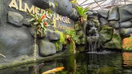
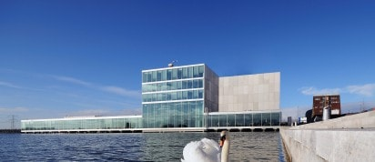

 Dierenpark Almere Jungle is oorspronkelijk begonnen als opvang voor exotische huisdieren. Bijna alle dieren in Almere Jungle zijn afgestaan of gedumpt en krijgen nu alle verzorging en liefde die ze nodig hebben. Met jouw komst steun je niet alleen het dierenpark maar ook meer dan 180 cliënten die zinvolle dagbesteding volgen bij Almere Jungle. Hoe meer bezoekers hoe leuker de dagbesteding natuurlijk.
 Kunstlinie Almere Flevoland (KAF) is een theater- en expositiecentrum in Almere. Het culturele ontmoetingspunt bestaat uit een theater, city lounge (horeca) en diverse vergader- en expositieruimtes. Het relatief nieuwe complex werd in 2007 geopend onder de naam Schouwburg Almere. Na een verbouwing in 2016 werd de naam veranderd in Kunstlinie Almere Flevoland.